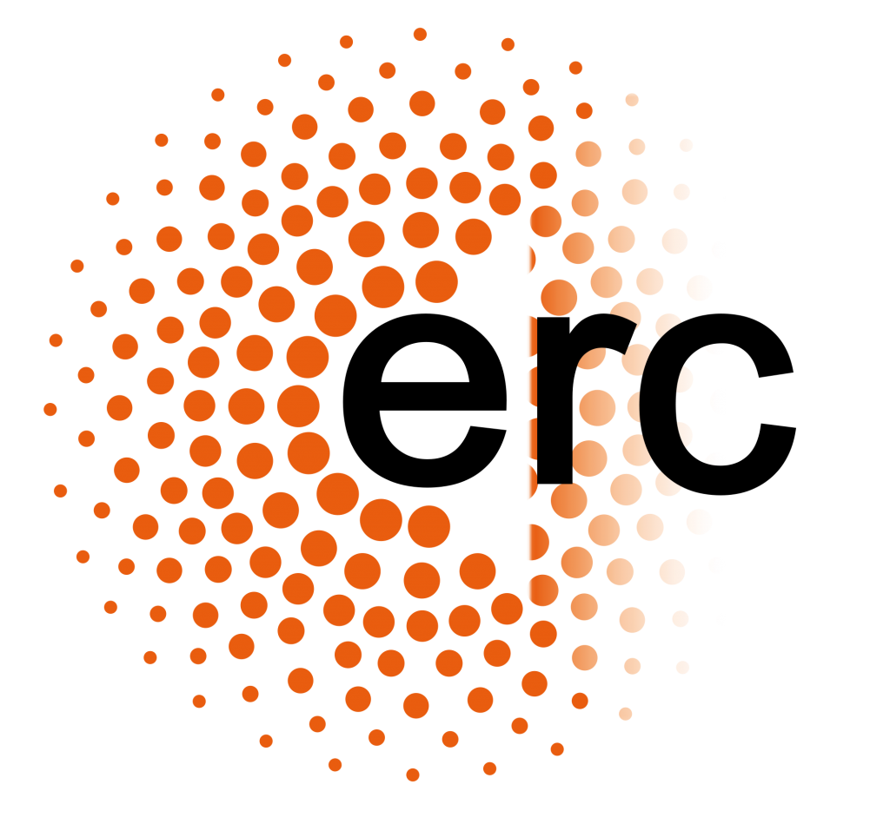

| 08:30 | Registration |
| 09:00 |
Opening Session Amílcar Falcão, Rector of the UC Maria Paula Paixão, Director of the FPCEUC Cláudia Cavadas, Leader of the Neuroendocrinology and Aging Group (CNC) Miguel Castelo-Branco, Director of CIBIT |
| 09:45 | How do you get a confession from the unconscious? Telepathy? Electroencephalography? How about both? Guillaume Thierry |
| 10:30 | Coffee Break |
| 11:00 |
Literacy, speech and music: common threads, diverging paths São Luís Castro |
| 11:45 |
Language proficiency is related to the tracking of the speech acoustics Nicola Molinaro |
| 12:30 | Lunch Break & Poster Session |
| 14:00 |
Contentopic mapping and object dimensionality: a novel understanding on the organization of object knowledge Jorge Almeida |
| 14:45 |
Transcranial electrical stimulation: a neuroscience tool for investigating brain (dys)function and behavior Sandra Carvalho |
| 15:30 | Coffee Break |
| 16:00 |
Neural basis of decision-making under uncertainty Miguel Castelo-Branco |
| 16:45 |
The effect of writing script on efficiency and metacognitive monitoring in inferential word learning Leona Polyanskaya |
| 17:30 |
Closing Remarks Leona Polyanskaya, Director of the LMD Laboratory |
LMDC 2024
Programme
Explore our schedule
-
Laboratory of Language, Metacognition and Decision-Making
Colégio de S. Jerónimo r/c
3001-401 Coimbra
PORTUGAL - +351 239 247 460
- lmd@uc.pt
- www.uc.pt/lmd


- © Ana Teresa Nunes, University of Coimbra
- Design: HTML5 UP